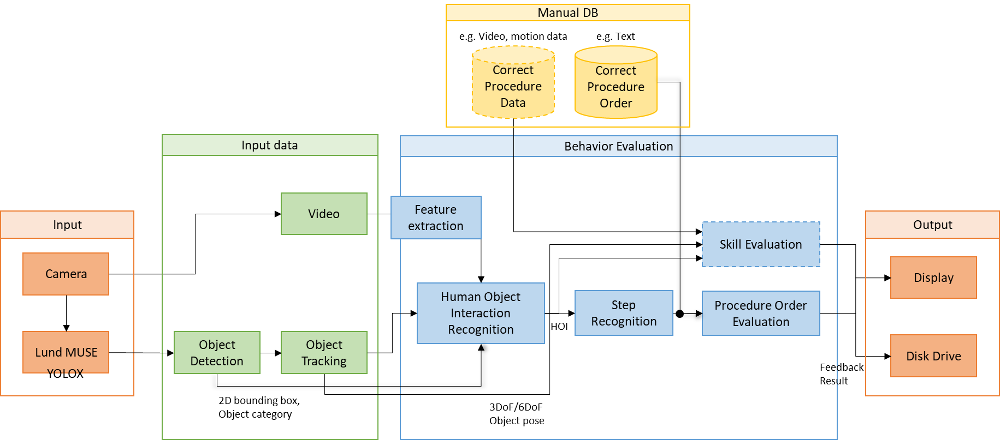

Architecture
System Pipeline

4-Stage Pipeline: Sensory Data → Recognition → Evaluation → Feedback
1
Sensory Data
Camera feeds capture worker actions in real time
2
Recognition
Detect what the worker did and when via temporal action detection
3
Evaluation
Evaluate procedure order and skill level
4
Feedback
Display results and error alerts to the worker

Full System Architecture — Camera → YOLOX → Object Tracking → Feature Extraction → HOI Recognition → Step Recognition → Evaluation → Display